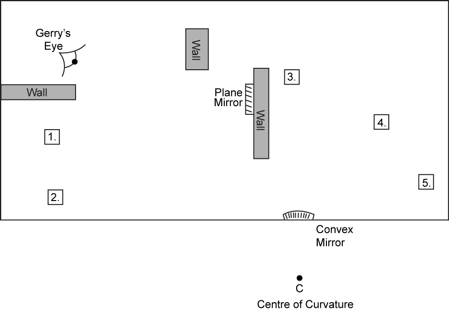

|
12. Gerry has just opened a new store and
wants to set up a system of mirrors to help him survey the store. After setting up one plane mirror
and one convex mirror, Gerry has his friend Tom stand at five different
locations as illustrated in the diagram below. |
|||||||
|
Using complete ray
diagrams, determine in which location(s) Gerry can see his friend Tom. Show all your work. System of Mirrors  Gerry can see his friend Tom at the following
location(s): .
|